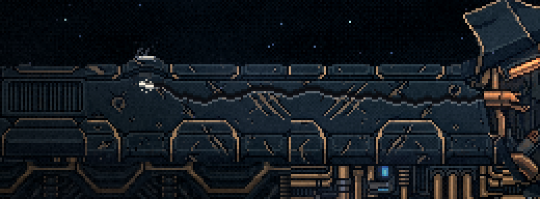
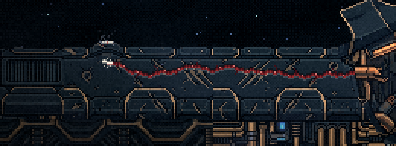

A Serpente no casco (S1b): conceitos
29/10/2026 · spec docs/superpowers/specs/2026-10-29-serpente-luta-s1b-design.md · ← a S1. Nada foi commitado.
Você: "na serpente de 3 cabeças ela vai e volta na investida... só que o corpo todo se move para frente … sem nenhum tipo de movimento convincente", e "Ficou a mesma coisa, só mudou a base e a distância da investida".
Na S1 o corpo dela continuava sendo o desenho inteiro deslizando. Agora:
- O caminho é o casco: ela some no rombo, corre por baixo e rompe o casco embaixo da nave.
- O corpo se move por animação: um gesto do PixelLab sobre a arte de hoje.
- O mundo reage: as placas sobem, a rachadura abre, o rasgo fica e depois fecha.
Nenhum quadro mostra ela atravessando o ar.
0. A 2ª maquete: só a parte de cima sai do casco
Você escolheu o erguer, a rachadura R3 e a cabeça laranja com mandíbula. E pediu: "o melhor é sair apenas a parte de cima de onde fiz o corte vermelho … quando sai todo o corpo, encontramos o mesmo problema … o corpo ainda está imóvel na parte de baixo".
- Agora a linha do seu corte fica na crista do casco. As roscas nunca saem e, dentro do rasgo, o corpo some no escuro.
- A linha preta que você viu era da maquete: eu cortava o corpo a partir da linha 147, mas a crista do casco começa na 151–152, e o céu aparecia por essas quatro linhas. Agora o corte segue a crista coluna a coluna. No jogo, a frente do casco vai ser feita dos pixels do próprio casco.
- A consequência: com as roscas dentro do casco, a cabeça viva não passa de y ~105 (de 216). A luta acontece na metade de baixo, e o leque de tiros cobre o alto.
1. A investida inteira (1ª maquete)
A maquete foi montada quadro a quadro em cima da foto da arena tirada do jogo. Ainda não é o jogo, mas está na escala e na cor dele. A sequência:
- A rachadura corre do rombo até embaixo da nave e trava (a ponta fica branca).
- A nave desvia para a esquerda.
- O casco estoura e ela sobe encaixada no rasgo, com a base escondida atrás da faixa e o gesto tocando.
- Na janela, a nave atira na cabeça.
- Ela afunda, e o rasgo e a rachadura se fecham.
Nas duas maquetes a rachadura é a R3 (§3). No jogo, o estouro vai ser o próprio casco voando nos próprios pixels, pelo motor de destroços.
2. Os gestos (PixMiniMax)
Os dois gestos têm 16 quadros e partem da arte aprovada como primeiro quadro, no lugar. Nenhum tem salto: a maior mudança entre dois quadros é de 14% no "erguer" e de 17% no "bote" (o limite é ~30%). Aqui estão ampliados 2× a 12 quadros/s.


O defeito dos dois: a cabeça laranja (o canhão) ganhou mandíbula e boca nas duas versões. A ciano e a verde ficaram fiéis. Se isso te incomodar, dá para travar a laranja no desenho de hoje em todos os quadros, como foi feito com o corpo da manta.
Com o gesto escolhido, a forma de 2 cabeças e a de 1 cabeça saem com o mesmo pedido.
3. A rachadura (ela correndo por baixo)
Os quatro visuais foram assados em pixel em cima do casco da arena, com a paleta dele. Cada GIF mostra a rachadura correndo do rombo até a nave, seguindo-a por 0,4 s, travando (branco), estourando e se fechando.


A trava, de perto (3×)


4. O que a spec traz e chega no filme
- A chegada: o casco para inteiro, treme, e explode de dentro para fora. O rombo se abre e ela sobe por ele.
- Em repouso: a base fica encaixada no rombo, e ela só sobe e desce (o x fixo).
- A forma de 2 cabeças: o bote duplo (a rachadura sai de novo do rasgo). A de 1 cabeça: a rajada de perto na janela.
- A morte da de 3 cabeças: ela afunda no rombo, as três luzes (ciano, verde e laranja) convergem lá dentro, e a maior irrompe dele. Sem véu preto, porque o casco esconde a troca.
- A fusão nova, solta do casco, continua sendo a S2.
Para você escolher
- O gesto: erguer (recomendo) ou bote.
- A rachadura: R1, R2, R3 (recomendo) ou R4.
- A cabeça laranja: deixar como o gerador fez, ou travar no desenho de hoje.